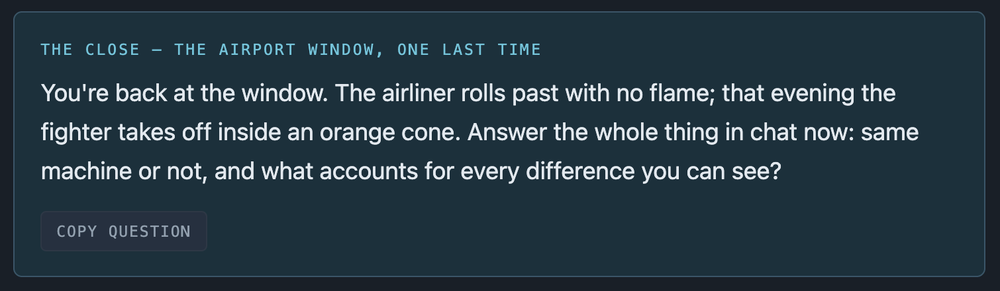
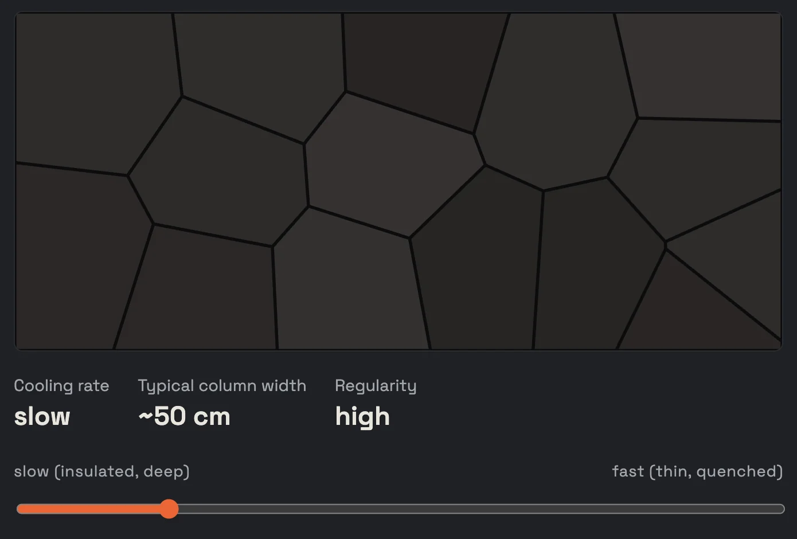
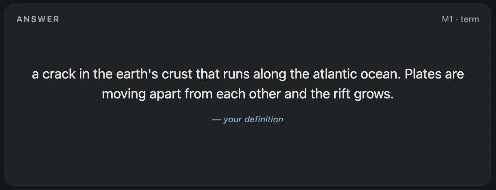

An independent Claude Skill
Chiron Course Tutor
Say what you want to learn. Chiron asks before it teaches, one or two questions at a time, to find where you get stuck, then builds two or three interactive lesson modules around exactly that, and a flashcard deck you write yourself.
It is not a chatbot that answers every question with another question, and not a course generator that hands a beginner and an expert the same material.
Runs as a Skill inside Claude. No account, server or database of its own. Not an Anthropic product.
The core loop
Elicit to the impasse. Then tell, composed. Then practice. Then apply.
That one sentence is the whole design. The questions at the start are not there to make you derive the content. They are there to get you to the wall, the specific thing you can feel you are missing, because an explanation delivered at the wall lands and one delivered before it doesn't. Once you are at the wall, more questions are withholding. So the questions stop and the module gets built.
Purple stages happen in chat. Teal stages are files you keep. The orange branch is taken only when a misconception surfaces. This diagram is a stand-in drawn from the skill's own flow description and will be replaced by the original learner-flow figure. TODO placeholder, to be replaced
-
Hook
You get one scenario ending in one question. It asks for a prediction and the reason behind it, because wrong models predict wrong but define fine. Chiron says up front that this is one question before the outline, so it is not a test in disguise, and that a guess is fine.
Your answer is the diagnostic. Before writing the scenario, Chiron writes down the two or three wrong models people usually arrive with, and checks that each of them would answer the question differently from the correct one. If they wouldn't, the scenario is vivid but useless, and it gets changed. What your answer revealed is never read back to you. That would be grading the person, not the work.
-
Plan
Before any teaching, Chiron writes the whole course down: your goal, a throughline question the course exists to answer, every claim that answer needs, and those claims grouped into two or three modules. Each claim is tagged fact, rule or principle, and the tag decides its first move. A fact is told, never elicited. A rule gets a worked example. A principle gets a question, if your hook answer showed something to build on.
The plan is a file you can open. Its name ends in "(ignore)", because it is Chiron's own tracking, re-read at every module boundary so the course is followed rather than drifted from. You see the module list as a numbered list of names, one line each, and the message ends on the first module's question.
-
Elicit, then build
Each module opens with one question aimed at its central mechanism. Chiron reads your answer for one of three things: you have it, you can name the wall, or you have nothing to build from. Any of the three ends the questions. A partial answer earns one more question, aimed at the correct fragment. Two is the ceiling, and if your hook showed no background at all, one is.
The module is built in the same turn. It opens on what the exchange just revealed, in your words, not on "in this module we will". If you already had the idea, the module compresses and opens on practice instead of explaining what you know.
-
Confront
A slip gets a one-word correction. A missing prerequisite gets delivered. A misconception, a coherent wrong model that still feels like it works, gets neither, because telling does not dislodge a model that still seems to work. Instead Chiron puts a case in front of you where your model makes a prediction, asks for the prediction, then shows the outcome. The gap is the correction. Then it asks what your model would have to change, and that turn is yours.
-
Boundary
Every module ends with a question its checks cannot grade: an application, answered back in chat. Chiron responds to that answer directly, saying what was right, what it misses, and the correction. Anything you asked gets answered in full, now, in text. Then, if the module had terms you need to know cold, it hands over a short list of card fronts and asks you to write the backs in your own words.
The next module does not build until the backs are written. You can wave the cards off with "skip the cards" or "next". Skip twice and Chiron stops offering them for the rest of the course and says so.
-
Close
You answer the throughline question in full. Chiron names what changed between your first attempt and this one. Then one case in an unfamiliar setting, same mechanism, different surface, to see whether the idea survives leaving home. Then one specific next thing to learn, with a one-sentence reason. Not a menu.
![Chat transcript. Chiron sets a scene: 23:30 on September 18th at the Skaftafell campsite with the aurora out, a DSLR on a tripod at f/2.8, 8 seconds, ISO 3200, and an iPhone on auto that produces a dark grainy smear of the same sky. It asks what each of the three numbers is doing, which one the phone got wrong, and what to change on the phone, then says a bad guess in one or two sentences is fine. The learner replies that the f-stop is how big the shutter opens, 8 seconds is how long it stays open, and ISO is how sensitive the sensor is. Chiron answers that two of the three are right, that the word sensitive hides the whole mechanism, and that it is building module 1 around exactly that.](assets/hook-and-attempt.png)
The argument
Why not just ask a chatbot, or take a generic course
Chiron is built against two specific failures. Both are easy to fall into, both look reasonable from the inside, and the skill's rules exist mainly to keep it out of them.
The tutor that keeps asking
Ask a tutoring chatbot to explain something and a familiar pattern appears: it answers with a question. That is fine while the question is doing work. It stops being fine the moment you are stuck, because every question after that is asked of someone who has already shown they cannot get there. It reads as evasive. It is slow. And the tutor cannot notice it from the inside, because each individual question still looks like good teaching.
The skill's own name for this is fishing, and it treats it as the failure that loses learners fastest. Its answer is to give the questions one job: find the point of confusion. Then stop. The limits are fixed rules rather than judgment calls. Two questions per module at most. One, if your first answer showed no background. None for a plain fact, because there is nothing to construct. And "just tell me" ends the questions in that turn, every time.
The rules are strict because the costs are lopsided. Asking too long loses the learner. Telling too early costs one check.
The course that never asked
Ask a model for a course on a topic and you get a course on that topic: an outline, objectives, sections in a sensible order. It is the same course for an expert and a total beginner, because nothing was asked first. It cannot adapt to what you said, since you did not say anything. And it opens with "in this module we will", which is the sound of material written before anyone knew who it was for.
Chiron does not build before it has a diagnostic answer, and the plan is derived from that answer: your goal, then the one performance that would show the goal is met, then only the claims that performance needs. A claim the throughline does not need is not in the course, however interesting. If your hook revealed a wrong model, that model becomes a wrong option in the end-of-module check, and the section carrying the correct claim names your wrong model first and says where it fails, because stating the correct model alone leaves the wrong one standing beside it.
Where each thing lives
The split between chat and modules is not cosmetic. Telling in chat drifts: every turn is pulled toward the last message, and the learner ends up steering. So the teaching is written in one pass as a module, holding the whole argument. Chat keeps the two jobs only chat can do: find where you are stuck, and read an answer nobody anticipated.
Composition goes in the module. Response goes in chat. Anything gradable, a multiple-choice item with misconception distractors, set the control, order these steps, lives in the module. Anything whose value is that someone reads it, free recall, apply this to your situation, the throughline, the card backs, lives in chat.
The artifact
What a module actually is
A module is one self-contained HTML file, written in one pass, in your world: your domain, your examples, and the scenario from your first answer where the plan makes it fit. It has a title, a stated arc, sections that follow from each other, and a closing line that folds the whole thing back into one sentence. Each section carries its claim, the explanation, a figure or instrument beside it, and a line saying what to notice.
Support fades on purpose. Module 1 gates every section and works its examples through. The last module gates less, explains less, and puts the problem before the explanation.
Checks that are graded, with a reason for every option
Every module carries checks in two places. Gate items sit between sections, one at each boundary the plan marks. An end-of-module set of four to six items sits after the last section. Each option is graded with its own explanation, so a wrong answer says why that answer was wrong. That is the entire value of writing wrong options that encode real misconceptions, and an item that only says "incorrect" has thrown it away. Options are parallel in length, because learners have learned that the longest, most hedged option is usually the right one.
From module 2 onward, at least a third of the set comes from earlier modules, reworded so the answer differs. The item that asked which control adds real light comes back as a situation where you must decide which control to move. Chiron says nothing about this. It does not flag the callbacks or soften the set.
![An end-of-module check set headed 'End of module, work all five'. Item 1 asks which pairing is the actual reason Iceland is above sea level, with four options: a spreading ridge on its own; a mantle plume on its own; a spreading ridge and a mantle plume in the same place, where the plume thickens the crust enough to lift the ridge crest out of the water; and the ridge being older here than anywhere else on the Atlantic. The learner chose the mantle plume on its own and the feedback reads: Not this one. A plume alone gives you an island with no rift down its middle, that's Hawaii. Item 2 asks what elevation a normal mid-ocean ridge crest sits at with no plume; the learner chose about 2.5 km below sea level and the feedback reads: Right. Even the high point of the system sits about 2.5 km down without a plume to lift it.](assets/module-check-set.png)
![A module section headed 'ISO does not make the sensor more sensitive'. Three paragraphs explain that the silicon has one fixed sensitivity, that ISO changes the gain applied to the count after the shutter closes, and that multiplying the signal by sixteen multiplies its randomness too, so the grain was always there and gain made it visible. A pull quote reads: Shutter and aperture buy you real light. ISO buys you the appearance of light, on credit, and the interest is noise. Below it a box labelled 'Gate, clear this to continue' asks: you're at Jökulsárlón at dusk, you leave shutter and aperture alone and change ISO from 800 to 1600, how many photons did the sensor collect? Four options: twice as many, exactly the same number, half as many because the sensor reads out faster, and depends which lens you're on.](assets/module-gate-item.webp)

An instrument only when it can show what a sentence cannot
When a claim's mechanism has a quantity you can turn, a rate, a threshold, a price, an angle, Chiron can build a control for it and let the prose shrink to what to move and what to watch. But having a variable is necessary, not sufficient. Before building, Chiron writes down the one sentence the instrument would let you skip, and asks whether moving the control would show anything that sentence does not already say.
It is an instrument only if you can name the control, the variable it changes, and what visibly changes. If you cannot name all three, it is a diagram, and it gets labelled as one. And if the relationship is a single control moving one way with no surprise in it, the instrument is decoration: you would drag a slider to confirm what you were just told, which is weaker than being told and shown one number. It earns its place when there is a real question the control answers: a threshold, a turn in the curve, or a trade-off between two things you have to weigh.
There is no quota in either direction. A module built entirely from prose and static figures is not under-built if none of its claims had a question hiding in a control. The order of the copy matters as much as the control itself: the prediction is asked before the control appears on the page, because a learner with a live slider in front of them will drag it before reading anything below it.


Figures show real output
If a figure plots data, the data is computed by running the code, and the real numbers are plotted. A scree plot with an invented elbow, a payoff curve with guessed numbers, a distribution drawn by hand: these are worse than no figure, because they teach a shape that is not true. Where a figure is a schematic rather than data, that is fine, and it is labelled as one. Drawn shapes are for things a child could draw. The moment accuracy depends on the drawing, it has to be computed output.
The same rule covers photographs. When the claim is about what something looks like, a bird, a rock formation, a camera's controls, the module embeds a real photo rather than drawing an approximation. A schematic teaches structure and a photo teaches appearance, and neither substitutes for the other.
![A light-themed module section labelled 'Plate 04, the reveal' and headed 'The same students, on the two eigenvectors'. The text says: now plot each student not on raw metrics but on their score along the top two eigenvectors PCA found; the fog resolves into three constellations, and PCA was never told the groups existed. Below is a dark scatter plot with axes labelled component 1 and component 2, showing three separated clusters of dots coloured and keyed as Planners, Writers and Browsers. A caption explains that left to right is component 1, quick-hit planning behaviour on the right and deep essay-writing on the left, and that up and down is component 2, overall activity, so the disengaged browsers sink to the bottom.](assets/figure-pca-reveal.webp)
The deck
A flashcard deck in your words, that works offline
Every course gets one file, flashcards.html. It grows at each module boundary and you keep it. The back of every card is yours, verbatim. Chiron never writes one, and never edits one, even a good one. If a back was corrected at the boundary, the corrected version is what you typed after the push, not Chiron's phrasing.
What a card can be
- A term. The front is the term alone. The back is your definition.
- A distinction. The front is "X vs Y". The back is the difference, in your words.
- A misconception. The front is "Why is it wrong to say:" followed by the wrong belief you actually held. The back is your corrected reasoning. These come only from misconceptions that surfaced during the course.
- A perceptual category. The front shows one real photo drawn at random from a pool of three or more, so you learn the category rather than the picture. The back is the distinguishing features, as you described them.
"What is such-and-such principle" is not a card type. A principle is checked by applying it, in chat, not by recognising its name.
How a card progresses
The scheduler is deliberately small. Each card carries a streak and a status, learning or mastered. There is no ease factor, no computed interval and no due date. Reviewing a card gives you two buttons, Right and Wrong.
- Right adds one to the streak. At a streak of two, the card becomes mastered and leaves the default queue.
- Wrong resets the streak to zero, keeps the card in learning, and puts it back at the front of the queue, so a miss comes around again soon instead of being logged and passed over.
The deck does not record when a card was last seen, only how it went. The default queue is every card still in learning, and the count reads "N to review", not "N due", because there is no date logic to have a due set from. A toggle switches the view between Learning, Mastered and All, so a mastered card can still be browsed or reviewed by hand. A reset button, per filter, sets every card in view back to a streak of zero and learning, which is the way back in for a mastered card you want to see again.
This is a Leitner-style ladder, not a full spaced-repetition algorithm, and that is a choice for a small, low-stakes deck rather than an oversight. A stronger scheduler is a separate future build, not part of this version.
The rest of the deck
- Back-first mode hides the front so you recall the term from your own definition.
- Shuffle within the current queue, and a filter by module. Nothing else to filter or sort by: one course per deck, so no course picker, and no type filter.
- Keyboard: 1 for Wrong, 2 for Right, space to flip.
- A save button downloads the deck as
flashcards.htmlwith the updated card data inside, so the copy you keep remembers every streak and status. - No frameworks, no CDN, no network. Inline CSS and JS. It works as an artifact in the conversation and as a file opened from disk, and it is readable at 380 pixels wide.

Grounding
What the design is built on
Each rule above maps to a specific finding in the learning-science literature. Here is the finding and the decision it produced.
- Time for telling, productive failure, and impasse-driven learning Schwartz and Bransford; Kapur; VanLehn
- Telling lands when it answers a wall the learner just hit, not before it and not long after. So Chiron stops asking once you hit a wall, not once you have derived the whole thing, and builds the module in that same turn.
- What matters is what the learner is doing, not how the tutor is asking Chi and colleagues; the ICAP framework
- Passive, active, constructive and interactive engagement produce different learning, in that order. This is why the checks are graded rather than read, why every module ends with an application answered in prose, and why the flashcard backs are written by you.
- The interaction plateau VanLehn
- Tutoring at a grain finer than a full step does not add measurable benefit. Applied as a hard cap of one or two questions per module rather than open-ended probing.
- Structured escalation instead of open-ended fishing Graesser's AutoTutor
- The elicit turns have a fixed shape and a fixed end: one question aimed at the mechanism, at most one more aimed at the correct fragment of a partial answer, then telling. The escalation is structured, not improvised.
- Interleaved and spaced review over blocked practice the desirable-difficulties literature, Bjork
- From module 2 on, at least a third of each end-of-module set pulls forward from earlier modules, reformulated so the answer differs. It feels harder and you will get more of them wrong. That is the mechanism working.
- The pretesting effect Kornell, Hays and Bjork
- Even a wrong guess before content improves later retention of that content. That is the whole justification for the hook coming before any teaching, and for the predict-first move at the start of a section whose claim is a behaviour.
- Two correct spaced repetitions as a mastery bar matching Anki's default graduation criterion
- A deliberately modest standard, chosen over a more complex algorithm for a small, low-stakes deck. This is the streak of two that marks a card mastered.
What this does and does not claim
These are established findings about human learning, and the design follows them. Chiron itself has not been through a controlled study. "Built on the research" is an accurate description. "Proven to improve learning outcomes" would not be, and this page does not make that claim.
Known limitations
Three things it does not do yet
-
Modules pull fonts over the network
Course modules load their typefaces from Google Fonts. They still work offline, just with plainer type. The flashcard deck has no such dependency and is fully offline by design. The inconsistency is a known, still-open item.
-
Named and iconic images cannot be fetched automatically
A specific painting, a film still, a public figure's photo: copyright and safety policy block that category of image search regardless of the image's actual legal status. This is a real constraint for an art, design or media-history course, where the artwork is the subject. The fallback is to ask you to upload your own photo of the subject, which then gets embedded into the module, or to link to a legitimate source and let the description do the teaching. Chiron will not draw a stand-in for a real artwork, because an invented painting teaches the wrong face.
-
One learner, one course, one conversation
Chiron is built for a single learner working through a single course in one conversation at a time. There is no multi-user mode and no classroom mode.
Install
Get the skill
A Claude Skill is a folder of instructions Claude follows. Chiron is one such folder. There is no account to create, no server, and no database of its own. All state, the plan, the modules and the deck, lives in files you download.
-
Download the zip
chiron-course-tutor.zip TODO placeholder link, to be filled in
-
Add it wherever your Claude surface manages Skills
Claude.ai, the Claude apps, or Claude Desktop. It runs anywhere Skills and file or artifact creation are both available. Where an optional tool is missing on a surface, image search, say, or the tappable prompt, Chiron does that step another way rather than skipping it.
-
Start a conversation
Say what you want to learn. The next section covers what happens from there.
What is in the folder
- SKILL.md the router: identity, the flow, and the rules for each stage
- references/teaching-voice.md the writing register, in modules and in chat
- references/plan-schema.md the format of the plan file
- references/module-build.md how a module is composed: arc, figures, checks, instruments, the handoff
- references/flashcard-deck.md the deck spec described above
- references/example-run.md one abridged course, showing the shape of every message type
Use
Say what you want to learn, or say "Chiron"
Ask for a course, a lesson, a crash course, a primer, a walkthrough or a deep dive. Say you want to learn, understand or master something properly. Ask to be tutored or quizzed. Or just say "Chiron". A plain question that wants an answer, "how does X work", gets a paragraph, not a course, unless you ask to be taught it.
The first thing back is not an outline. It is one line saying the outline is coming, then a scenario, then one question. Answer it, badly if you like. If Chiron still does not know what you want to be able to do with the topic, it asks that, once. Two turns is the ceiling before the plan. Then you get the module list, one line each, and the first module's question, and the course is under way.
If your goal is "just curious" or "no idea", Chiron picks the most common real use of the topic, treats it as the goal, and names it so you can correct it.
![A chat. The learner's message invokes the skill with a slash command, /chiron-course-tutor, and says: I want to learn the geology of Iceland so when I am visiting I can better appreciate the stuff around me. Chiron replies that it will lay out the whole course in a moment, three modules each built around a place the learner is actually going, but first one question so it builds for where they already are and not from zero. It describes standing at Þingvellir on the floor of a valley between two walls of dark rock, with a sign saying this is a boundary between the North American and Eurasian plates, and asks which way the two plates are moving relative to each other, toward, apart or sliding past, and what about the landscape makes them pick that one. It ends: a guess is completely fine, it doesn't need to be right, it just tells me where to start.](assets/invoke-and-diagnostic.webp)
Things you can say at any point
just tell meEnds the questions in that turn. The module gets built.nextA valid answer to any boundary question. Skipping three boundaries makes the course shorter, not the questions harder.skip the cardsWaves off a card block. Honoured once without comment. Skip twice and the cards stop for the rest of the course.I've got thisCloses the course early: anything still outstanding in one pass, the throughline, the last cards, done.
You will never hear the machinery. Words like impasse, elicit, claim state or contingency are Chiron's, not yours, and it keeps them to itself.